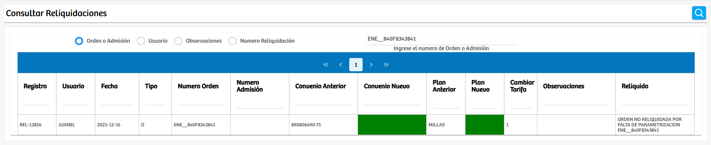
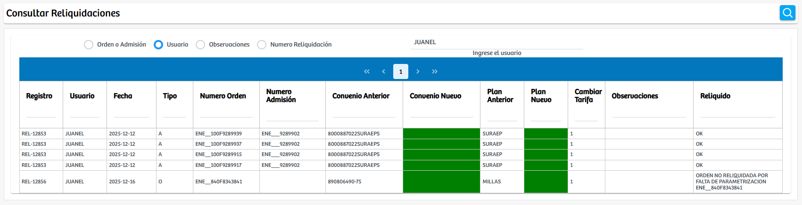

Modulos Sas-Web
Funcionalidades
Consultar Reliquidaciones Convenio
El módulo Consultar Reliquidaciones Convenio permite visualizar y auditar todas las reliquidaciones realizadas en el sistema para órdenes o admisiones asociadas a convenios. Su objetivo es centralizar la consulta histórica y operativa de estos procesos, ofreciendo diferentes criterios de búsqueda que facilitan el análisis y la trazabilidad de cada caso.
Al ingresar al módulo, el usuario encuentra un conjunto de filtros de búsqueda presentados mediante checkbox, que determinan el campo sobre el cual se realizará la consulta. Las opciones disponibles son:
- Orden o Admisión: permite buscar una reliquidación ingresando el número de orden o el número de admisión.
- Usuario filtra las reliquidaciones registradas por un usuario específico del sistema.
- Observaciones: realiza una búsqueda basada en el contenido del campo observaciones, útil para auditoría o seguimiento.
- Número de Reliquidación: permite acceder directamente a un registro puntual cuando se conoce su código único.
Según el filtro seleccionado, el sistema habilita un campo de texto en el cual se debe ingresar el dato correspondiente. Al ejecutar la búsqueda mediante el botón de consulta, la plataforma devuelve en la tabla inferior todos los registros coincidentes.
Cada fila del resultado muestra información completa sobre la reliquidación, incluyendo: Código del registro, Usuario que ejecutó la reliquidación, Fecha, Tipo, Número de orden, Número de admisión, Convenio anterior y convenio nuevo, Plan anterior y plan nuevo, Indicador de cambio de tarifa, Observaciones, Estado final o mensaje asociado a la reliquidación. Esta vista permite al usuario consultar tanto reliquidaciones exitosas como aquellas que presentaron inconsistencias, facilitando la validación de procesos y el control operativo.
En resumen, este módulo constituye una herramienta clave para auditoría, trazabilidad y análisis de las reliquidaciones asociadas a convenios dentro del sistema, permitiendo filtrar, revisar y validar cada registro de forma precisa y eficiente.